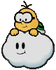
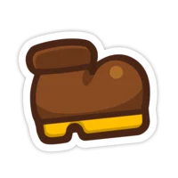
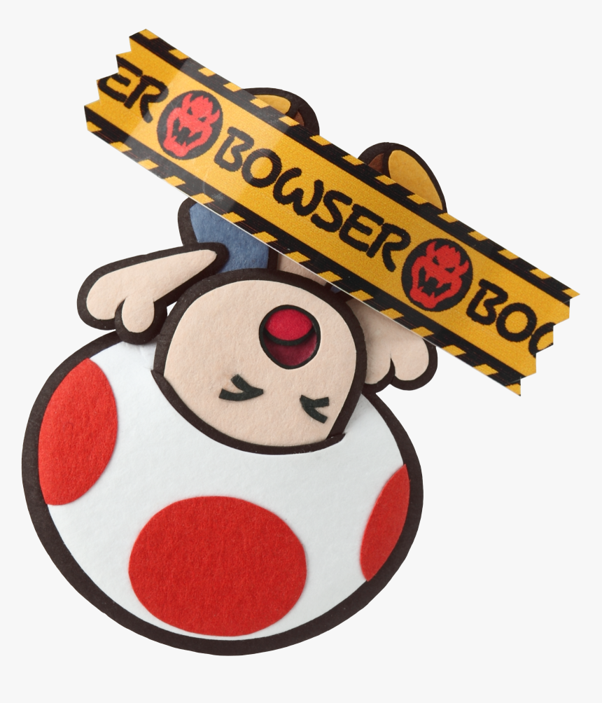

My Website
Welcome! Here you can find information about my projects, services and more. Let's start with who I am. I´m Milena and I stared in development a few years ago, I focused on front end and design, but I also enjoy working with backend technologies, but I need to improve my skills in this area.
Goals
Game to 3dsI have so many ideas, but I can´t seem to focus on just one. I like several things of different things. Recently, I thought that I can make a game to 3Ds, I know some thing about C++, probably not enough, however I can´t give up if I didn´t start. One of my inspirations is Paper Mario: Sticker Star, I´m super focused on this game, because I love the dynamics and mechanics. Others are pokemon X or Y and Zelda´s games.



Make a Visual Novel with RPG
I discovered this universe with games like Danganronpa and don´t see difficult make one visual novel compared to other games and about RPG I love Deltarune.


Make animations
I love animations, I´m beggining, but I can make some animations with Krita and maybe in Blender. I want to improve my skills in this area and make some animations for my games too like a cutscene.
 Thank you
Thank you